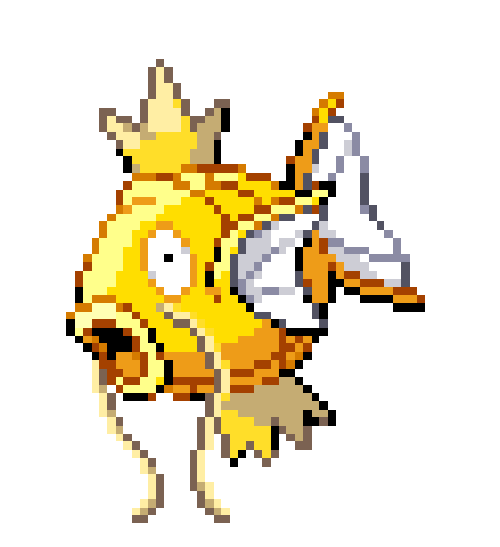
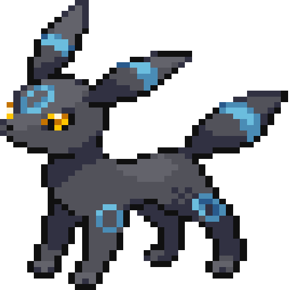

¿Qué tan probable es?
Para ser exacto la probalidad de encontrar un siny es de 1 en 4096 lo que hace que hace casi imposible encontrarse o ver a uno, pero no te preocupes que a lo largo de las generaciones se han incluido objetos que facilitan la tarea o aumentan la probabilidad como el amuleto iris o el metodo masuda que explicaremos en breve, al ser combinados podemos bajar la probabilidad hasta en un 50% que lo hace un poco mas probable.
El metodo masuda, este conciste en hacer crianza con un pokemon en particular ditto, una masita adorable que se transforma en otros pokemon(lo se un poco raro) pero bueno lo que pasa es que al igual que nosotros los pokemon cuentan con un registro de su pais de origen, entonces si un ditto de japon cria con cualquier otro pokemon aumenta la probabilidad de que un pokemon sea shiny.
¿Cuales son los mejores?
Este apartado es meramente estetico per a decir verdad es cierto que hay unos shinys mejors que otros lo cual los hace un deleite para los ojos aqui algunos ejemplos selecionados por nuestros miembros.
- 
- 